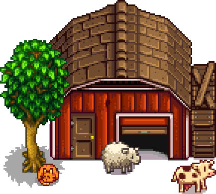
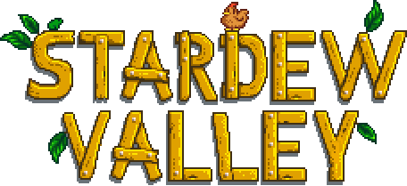
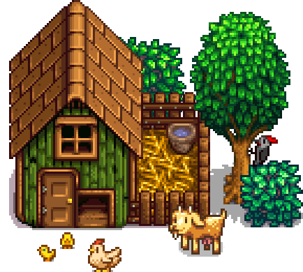
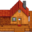
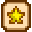
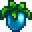

Stardew Valley Wiki
 |
 We currently have 2,003 articles about the country-life RPG developed by ConcernedApe. |
 |
| About | Resources | ||||||||||||||||||||||||||||
|---|---|---|---|---|---|---|---|---|---|---|---|---|---|---|---|---|---|---|---|---|---|---|---|---|---|---|---|---|---|
|
 Interactive farm planner (stardew.info) Stardew Checkup (mouseypounds.github.io) Stardew Profits (thorinair.github.io) | ||||||||||||||||||||||||||||
|
| ||||||||||||||||||||||||||||
| Official Soundtrack | |||||||||||||||||||||||||||||